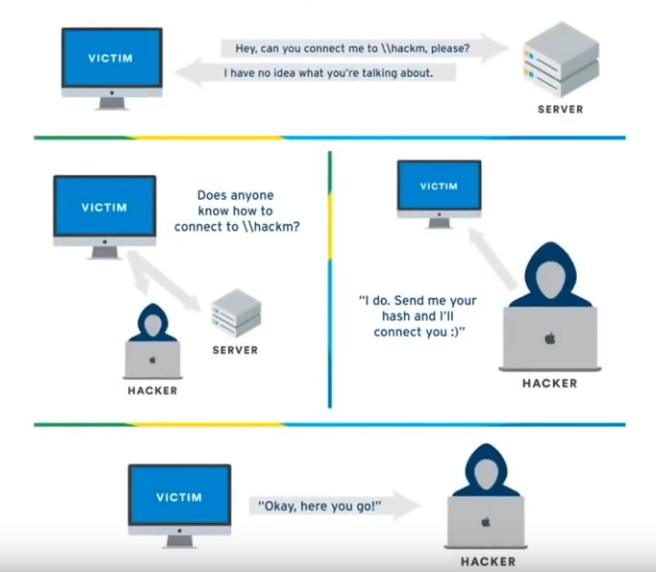

=> Man in the middle :- - Lot of traffic on a network
- - Hashes usually go to a known share/device
- sometimes however, the destination is unknown or an error is occurring- - Man in the middle intercept the hashes
- - Make the hash believe he is the target
- => Example :
- - Share is \\hackme
- - Victim makes a typo and tries to connect to \\hackm
- - The server doesn't know \\hackm
- - Victim host searches the network for \\hackm : sends a broadcast message "Does anybody know how to connect to \\hackm ?"
- - Man in the middle responds "I know \\hackm, send hash and I'll connect you"
- - Victim sends hash to man in the middle
